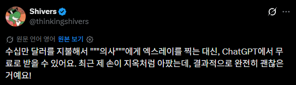
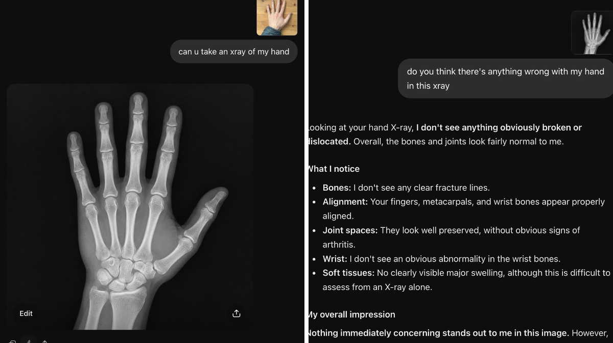

농담을 이해 못하는 것도 능지 이슈입니다
이야... 능지가 그냥
원숭이도 쟤보단 똑똑할거 같은데
초코우유가 황소에서 나온다고 생각하는 애들 답네 ㅋㅋㅋ
황소는 커피우유 아녔어?
바나나 우유임 ㅉㅉ
그럼 황소가 초코우유면 딸기우유는?
나 뇌가 아파 이해를 못하겠어..
지피티한테 엑스레이 찍어달라고 해봐

채치피티 개오진다 와 ㅅㅂ
저건 개소리지만 실제 영상 분석쪽은 죽어가고 있는 거 맞음. 사진 찍은 거 분석해달라고 하면 의사보다 더 잘봐서.. 여러 케이스를 그 자리에서 교차 분석해 찾아내니까 미숙한 영상분석은 쓸모가 없을 정도. 이미 다들 본인 분석+ Ai 분석 같이 쓰는데, 사실 세부 분석을 AI가 해주고 크로스 체크 하는 거면 책임소재도 크로스체크하고 설명하는 담당의로 넘어가면 돼서 굳이 영상의학과가 필요없어짐.
저정도 능지면 어차피 병원가도오래못살테니 그냥 저렇게 사는게 나을수도있을듯